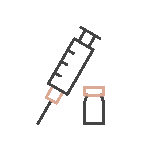

INFLO vous offre des avantages dans une clinique de dermatologie esthétique.

Grida Plastic Surgery
Située à seulement une minute à pied de la station Gangnam à Séoul, Grida Plastic Surgery est dirigée par un chirurgien plasticien certifié par le gouvernement coréen, qui réalise personnellement toutes les consultations et interventions chirurgicales. Pour garantir la sécurité des patients, nous proposons un système de gestion de l'anesthésie personnalisé en fonction de l'état de chaque individu et maintenons un environnement chirurgical sécurisé, prêt à faire face à toute urgence. Depuis son ouverture, Grida Plastic Surgery est fière d'afficher un bilan sans incident, plaçant la sécurité des patients au-dessus de tout.
Médecin
Informations hospitalières
Lu, Ma, Nous, Je
Vendredi
Samedi
10h00 - 19h00
10h00 - 9h00
10h00 - 17h00
Fermé tous les jeudis, dimanches et jours fériés.
 Vérification du nom réelPas de médecin fantôme, hôpital sûr
Vérification du nom réelPas de médecin fantôme, hôpital sûr-
Salle de réveilL'admission en salle de réveil postopératoire est disponible
- 
AnesthésisteUn spécialiste en anesthésiologie collabore
-
Système d'urgenceNous sommes un hôpital qui fournit une réponse d'urgence rapide
-
SuiviNous fournissons des soins postopératoires approfondis
-
Patient étrangerAide aux étrangers
Intérieur de l'hôpital
Emplacement de l'hôpital
서울 강남구 강남대로 408 ybm 어학원 강남 12 층
Examen de l'hôpital
INFLO ne peut être répertorié dans l'annuaire que s'il reçoit une note moyenne de 4,5 (sur 5) ou plus de la part de divers canaux tels que Google, Naver et les applications de chirurgie plastique.